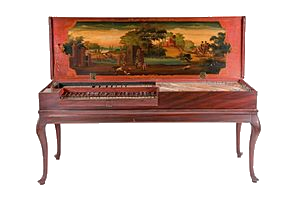

Клавишные музыкальные инструменты — инструменты, извлечение звука в которых осуществляется при помощи системы рычагов и управляется при помощи клавиш, расположенных в определённом порядке и составляющих клавиатуру инструмента.

Первый струнный клавишный инструмент — клавикорд. Он появился в
позднее Средневековье, хотя никто не знает, когда именно. Клавикорд
имел устройство, похожее на устройство современного фортепиано.
Однако его звук был слишком мягким и тихим для того, чтобы на нём
можно было играть перед большим количеством слушателей.
Клавикорд являлся одним из самых чутких и отзывчивых клавишных
инструментов своей эпохи, эпохи барокко. При нажатии на клавишу,
маленький медный квадратик под названием «тангент» ударял струну
и, упираясь в неё, как бы разделял её на две части — одна из которых
являлась звучащей, а другая заглушалась лентой из войлока, протянутой
вдоль струн. При отпускании клавиши тангент возвращался в исходное
положение, колебания переходили на всю струну и мгновенно заглушались
за счет той её части, которая была заглушена войлоком. У клавикорда
было по одной струне на каждую клавишу, или по две — такой
клавикорд называется «связанный». Будучи весьма тихим инструментом,
клавикорд все же позволял делать крещендо и диминуэндо.
Клавиатура может быть статической или динамической.
Статическая
клавиатура определяет положение клавиши (нажата или отпущена);
сила звука определяется другими средствами.
Динамическая клавиатура
определяет также и силу нажатия, соответственно и изменяет силу
звучания инструмента.
Клавиатуры органа, аккордеона, клавесина и фисгармонии — статические,
фортепиано, клавикорда и челесты — динамические. В электронных
клавишных инструментах возможны оба варианта.
Клавиатуры бывают для рук, у органа и клавесина могут быть
несколько клавиатур и тогда их называют «мануалами», а также
для ног — педальная клавиатура.